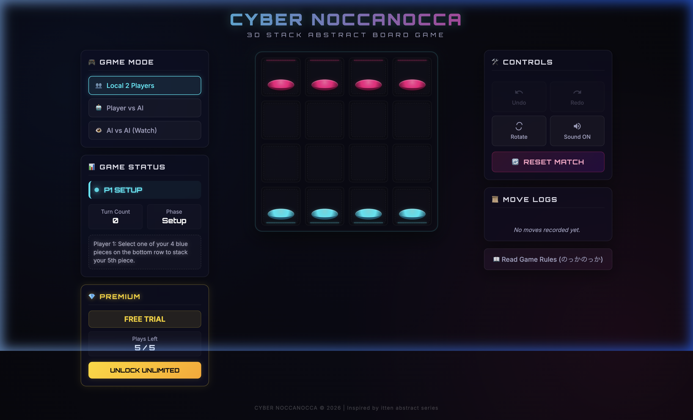
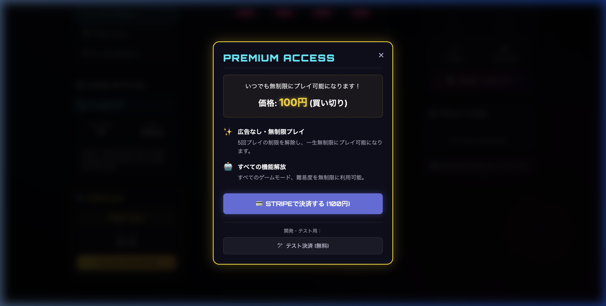

「CYBER STACK 55」は、クラシックなスタックボードゲームのルールを拡張・再構築し、5×5のより広い盤面（計25マス）と各プレイヤー10個の駒で繰り広げられる、SFサイバーパンク風の3D対戦パズルウェブアプリです。相手の駒の上に乗り上げて動きを封じ、相手側の最奥ラインに到達することを目指します。

サイバーパンク空間で相手の駒に「乗り上げ」、スタックをハックする
他の駒の上に乗ることができます（最大3段まで）。下の段の駒は乗られている間、移動できず拘束されます。
盤上の駒は前後左右斜めの8方向に1マス進めます。動かせるのは常に「スタックの最上段の駒」のみです。
ローカルでの2人対戦(PVP)、強力なAIと対戦する(対AI)、そしてAI同士が競うのを見守る(AI観戦)モードがあります。
Easy (ランダム多め)、Medium、そして先読みアルゴリズム Minimax を実装した Hard の3つの強さから選択可能。
戻る(UNDO)・進む(REDO)の完全サポートに加え、盤面を180°反転させて逆方向から戦況を確認できる機能付き。
Web Audio APIを用いたビープ音が、SF端末でオペレーションを行っているかのような高い臨場感を提供します。
下の5x5グリッドは、LP用に最適化された簡易体験版です。駒をクリックして選択し、移動可能な緑色マスをクリックして動かしてみてください。
2人用の抽象ボードゲーム「Cyber Stack 55」の基本戦略
縦5×横5の盤面を使い、プレイヤーは青(手前)と赤(奥)に分かれます。初期配置として、各プレイヤーは手前の自陣の横1列（5マス）に、自分の駒を2個ずつ、２段重ねのスタック（計10個）を配置した状態でゲームをスタートします。
自分のターンには、自分の駒を周囲8方向（縦横斜め）の隣接する1マスに動かすことができます。駒を移動させる際、空いたマスはもちろん、すでに駒が存在するマスの上にも「乗る」ことができます。スタックの制限高は最大3個までです。
駒が重ねられた場合、動かすことができるのは一番上に乗っている駒のみです。下に敷かれた駒は、上の駒がどくまで移動させることができません（自分の駒でも相手の駒でも同様です）。これを利用して敵の足を封じるのが基本戦術です。
勝利条件は以下のいずれかです：
1. ゴール到達: 自分の駒を1枚でも相手側の最奥段（青なら最奥の行、赤なら手前の行）に進める。
2. 手詰まり（ブロック）: 相手が自分のターンに全く動かせる駒がない状態（すべて拘束されているか動くマスが満杯）に追い込む。
いつでもワンコインで、一生涯無限プレイが可能に
買い切り型・追加料金なし
初期状態では、どなたでも5回分の無料対戦プレイ枠が提供されています。まずは2人対戦やAI戦の操作性、サイバーデザインの雰囲気をしっかりとお確かめください。

CYBER STACK 55の動作環境や決済に関するお問合せ
新しいマッチを開始（「RESET MATCH」ボタンを押して新規ゲームを生成）するごとに、1プレイ回数が消費されます。ターン中の操作を行ったり、前の状態にUNDOしたり、ブラウザをリロードするだけではプレイ回数は消費されません。
いいえ、完全に「買い切り（ワンタイム決済）」です。一度決済を完了すれば、それ以上の追加請求は一切なく、将来のアップデートを含め無期限にゲームをご利用いただけます。
世界中で数百万社に導入されているオンライン決済プラットフォーム「Stripe Checkout」を使用しています。クレジットカード情報は当サイトのサーバーを通過せず、直接暗号化されてStripe社に送信・処理されるため極めて安全です。
無料プレイ枠はブラウザの `localStorage` に記録されています。基本的には5回で終了となりますが、開発検証用に決済モーダル下部に「テスト決済 (無料)」ボタンを設置しており、これを押すことで決済を行わずに全機能を解放して試用することが可能です。
はい。レスポンシブWebデザインに対応しており、iPhoneやAndroid端末、iPadなどのブラウザでも快適に遊ぶことができます。画面が自動的に最適な比率に調整され、タップ操作で快適に対戦が行えます。